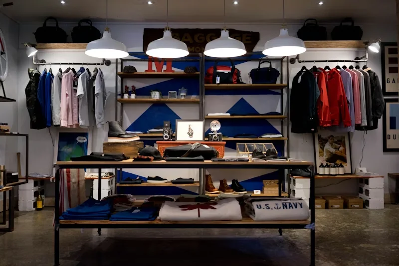

- Home
- Case studies
- Transforming Retail Cameras into AI-Driven Insight Systems
Transforming Retail Cameras into
AI-Driven Insight Systems
Traditional CCTV in malls and retail stores recorded everything but explained nothing. KenVision turned that passive infrastructure into live operational and marketing intelligence without touching a single camera.

Cameras Everywhere. Intelligence Nowhere.
Traditional camera systems in malls and retail environments were functionally limited recording footage no one was analysing, missing the operational signals hidden in plain sight.
Manual Counting & Monitoring
Footfall was tracked by hand-clickers or basic beam counters. No zone-level data, no dwell time, no understanding of how visitors moved through the space.
No Granular Visibility
Retail teams could see total visitor counts but had no view into which zones underperformed, which products attracted attention, or where queues formed before they became a problem.
No Actionable Business Intelligence
Cameras functioned only as surveillance tools. Marketing and operations decisions were made on gut instinct, resulting in missed revenue opportunities and poor resource allocation.
The Challenge for Shopping Malls
Modern malls manage thousands of daily visitors but operate with limited real-time intelligence making decisions hours or days after the opportunity has passed.
Blind Spots in Footfall & Flow
- No visibility into peak patterns by location, visitor navigation routes, or cross-level traffic
- Tenant lease negotiations and zone pricing decided on foot count alone, not zone performance
Reactive Operations & Security
- CCTV footage was reviewed only after incidents occurred not used to prevent them
- Behaviour pattern analysis was only possible in very limited, after-the-fact scenarios
- Emergency response and incident management remained near-manual
Limited Tenant & Revenue Insights
- Leasing decisions, tenant acquisitions, and zone pricing were based on foot count only
- Marketing campaigns and events were measured qualitatively, not quantitatively
Result: Cameras recorded everything. Intelligence produced none.
The Challenge for Retail Stores
Retail stores capture massive customer movement on camera, but almost none of it translates into actionable insight.
No Visibility into Shopper Behaviour
- Product engagement, visit patterns, and dwell time were not tracked in any meaningful way
- Conversion was estimated from item counts, not from actual shopper interaction analysis
Missed Operational Optimisation
- Staffing was not dynamically adjusted to real-time footfall or predicted peak hours
- Blind spots and merchandising decisions were based on intuition, not data
Disconnected Marketing Measurement
- No way to correlate in-store visits with external marketing campaigns or promotional events
- Marketing and store operations teams worked in silos with no shared data layer
Result: Stores had cameras, but no understanding of what customers were actually doing.
Why Existing Solutions Failed
Despite widespread camera deployment, existing solutions failed to deliver intelligence only visibility.
- Passive CCTV footage stored but never analysed. Value locked in archives no one reviewed.
- Basic counters beam sensors gave total counts only. No zones, no dwell, no behaviour.
- Siloed systems security, operations, and marketing each ran on separate tools with no shared insight layer.
- No real-time output any analysis was retrospective. By the time reports were ready, the moment had passed.
Six Capabilities. One AI Layer. Zero New Hardware.
KenVision's AI was layered directly onto the existing camera infrastructure activating intelligence that was always possible, just never realised.
Passive CCTV Turned Active Intelligence
AI fusion layered on top of existing cameras with no hardware swap. Every frame now carries analytical value footfall, behaviour, zone occupancy.
Accurate Footfall & Dwell Analytics
Real-time automated counting and dwell tracking across all zones, entry, and exit points. 95% accuracy validated in live retail environments.
Real-Time Operational Intelligence
Automated alerts and live dashboards let managers spot bottlenecks, staffing gaps, and anomalies the moment they appear not hours later.
Unified Insights Across All Departments
Single platform giving security, operations, and marketing shared visibility. Cross-department decisions backed by the same real-time data.
Deployed Without Disruption
Software-only deployment on top of existing infrastructure. No rip-and-replace, no downtime, no procurement delays. Live within 48 hours.
Reactive to Predictive Operations
AI models detect future footfall trends from historical patterns enabling predictive staffing schedules, stock alignment, and campaign timing.
The Results
Are You Ready to Transform Your Cameras?
Book a 30-minute demo and see KenVision running live on a retail feed footfall heatmaps, dwell analysis, and operational alerts in one dashboard.